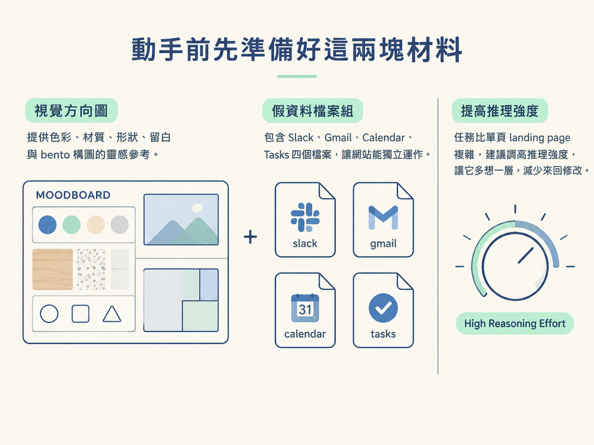
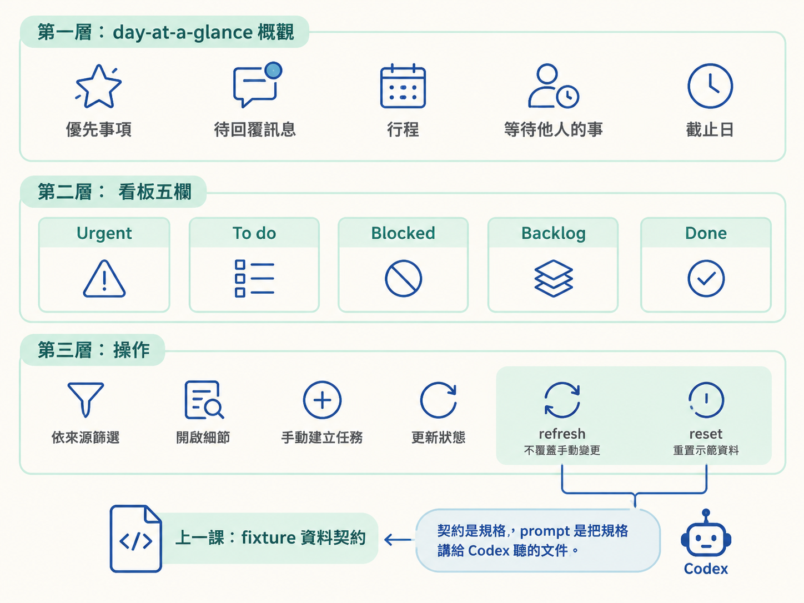
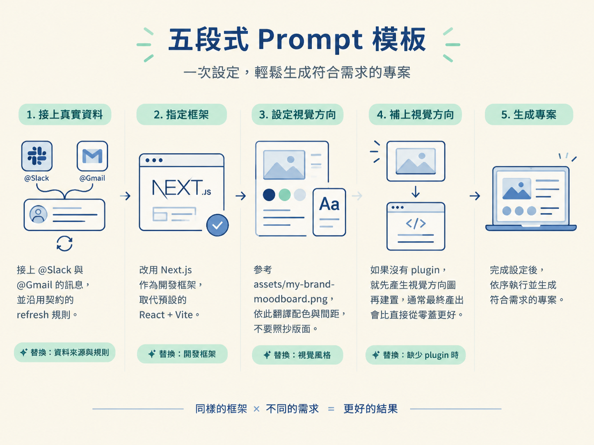

你想讓 Codex 幫你蓋一個儀表板，手上有一張喜歡的視覺參考圖，也有一組假資料。但貼一段短短的描述過去，跑出來的東西往往缺東缺西：忘了讀你的資料、把參考圖直接抄成版面、刷新資料時把你手動加的任務蓋掉。
問題不在 Codex 不夠聰明，而在 prompt 少了幾段關鍵的說明，而且順序亂了。這一課把 Mission Control 的範例 prompt 逐段拆開，它只有五段，就把目標、視覺、功能、資料行為與品質全部交代完。讀完你會拿到一份可以直接貼進 Codex 的模板，換掉素材就能用在自己的專案上。
這份 prompt 預設你已經有兩樣東西：一張視覺方向圖（範例用 assets/mission-control-moodboard.png），以及一組 fixture 資料（fixtures/mission-control-fixtures/）。所謂 fixture，就是事先寫死的假資料，讓整個站不需要真實帳號也能跑得起來。
如果你想接真實的 Gmail、Slack，先到 plugins 安裝對應的 plugin、走完 onboarding，然後在 prompt 裡用 @Gmail、@Slack 提及它們就好。安裝是你的前置動作，不需要塞進 prompt。
還有一個設定建議先調好：這個任務比單頁 landing page 複雜，範例是在 high reasoning effort 下執行的。推理強度調高，讓它動手前多想一層，能省下不少來回修改的次數。

prompt 的第一句只做兩件事：指定一個全新的工作資料夾，並講清楚用什麼工具建置。範例這樣寫：
Create a new folder called `mission-control` and build a site there using Sites.新資料夾是為了隔離，這次的產出不會跟你其他專案的檔案混在一起。指定 Sites 則決定了後面能用哪些能力：Sites 這個 plugin 內含一組 skill，包含建置前產生視覺方向、以及最後的發佈流程。
預期看到什麼：Codex 先開好資料夾，再進入建置流程，而不是把檔案丟在 repo 根目錄。
第二段是整份 prompt 的核心。先一句話說清楚這個東西是什麼，接著指定資料來源與視覺方向：
Build a responsive personal workday dashboard called Mission Control. Use the fictional data in `fixtures/mission-control-fixtures/` and use `assets/mission-control-moodboard.png` as the visual direction. Translate its colours, tactile materials, soft shapes, generous spacing and playful bento composition into a practical interface; use it as art direction, not as a layout to copy.這段有三個關鍵字。responsive 是要求它一開始就把不同螢幕尺寸納入考量，不要等做完再補。指向 fixtures/mission-control-fixtures/ 是把資料來源說死，Codex 就會照著你的資料讀，而不是自己編一組看起來合理的假資料。
最後那句「translate ... not as a layout to copy」負責拿掉歧義：要翻譯的是顏色、材質、形狀、留白與 bento 拼貼構圖這些感覺，不是把 moodboard 當版面草圖臨摹一遍。少了這句，它很可能照抄那張圖的排版。
第三段最長，因為它同時交代「畫面要顯示什麼」與「使用者能做什麼」：
Include a day-at-a-glance overview with top priorities, messages needing a response, schedule, items waiting on someone else and deadlines. Add a task board with Urgent, To do, Blocked, Backlog and Done columns. Let people filter by source, open task details, create manual tasks, update task status, refresh the fixture data without overwriting manual changes and reset the demo data.拆成三層來讀比較快。第一層是 day-at-a-glance 概觀，五個面向：優先事項、需要回覆的訊息、行程、正在等別人的事、截止日。第二層是看板，指定五個欄位：Urgent、To do、Blocked、Backlog、Done。第三層是操作：依來源篩選、開啟任務細節、手動建立任務、更新任務狀態。
最後兩項操作對應到上一課的資料契約。「refresh the fixture data without overwriting manual changes」把 refresh 不覆蓋手動任務的規則寫進 prompt，「reset the demo data」則把 reset 的語意帶進來。這就是為什麼要先懂契約再寫 prompt。契約是規格，prompt 是把規格講給 Codex 聽的那份文件。

第四段管的不是功能，而是「不要長出多餘的東西」：
Keep the interface focused, with one clear title per section and no redundant labels or explanatory chrome. Use durable Sites data so tasks persist across reloads. The site must work entirely from the fictional fixtures without real accounts or integrations.「one clear title per section」與「no redundant labels or explanatory chrome」是克制條款，避免每個區塊都被塞上多餘的標題與說明文字。
第二句很關鍵：用 durable Sites data，讓任務在重新整理頁面後仍然存在。少了這句，你手動新增的任務整理一次頁面就消失。第三句把範圍封死：整個站必須完全靠 fixtures 運作，不需要真實帳號或整合，等於再一次確認資料來源。
最後一段是常見的收尾三件套，加上發佈動作：
Make it responsive, accessible and polished, then publish it privately with Sites.responsive、accessible、polished 這三個詞雖然抽象，但搭配前面的視覺方向與功能清單，已經足夠當作驗收的起點。
「publish it privately」是明確要求用私人方式發佈。如果你之後要接真實 Gmail、Slack 的資料做示範，這一步尤其重要，公開頁面可能會露出你的個人資訊。
把這五段當模板，改幾個地方就能用在自己的專案。你可以只動其中一段，其餘保留：
# 不用 fixtures，改接真實資料
Use @Slack and @Gmail. Pull messages from my Slack channels and my Gmail
inbox from the last two weeks, and keep the fixture contract's refresh rules.
# 指定框架
Build it with Next.js instead of the default React + Vite setup.
# 換自己的視覺方向
Use `assets/my-brand-moodboard.png` as the visual direction. Translate its
palette and spacing; do not copy its layout.
# 沒有 plugin，也想先看方向
Before you build, pause and generate a visual direction image first, then build it.注意最後兩段。接真實資料時，把契約裡的 refresh 規則一併帶過去，免得手動任務被覆蓋。沒有 plugin 時，自己補上「先產生視覺方向圖再建置」這一步，通常最終產出會比直接從零蓋更好。另外，範例 prompt 沒有指定框架，Codex 預設用 React 加 Vite；想用 Next.js 之類的框架，就在 prompt 裡寫明。

開始執行後，如果用的是 Sites 這類 plugin，通常會先看到 Codex 產生一張視覺方向圖，接著才進入建置。範例那次跑了十幾分鐘，期間它會打開內建瀏覽器，在不同斷點自己點來點去驗證畫面。
你不需要在旁邊盯著。跑完之後，你手上會有一個能開、能操作、重新整理不會掉資料的儀表板第一版。至於怎麼把「差一點」的地方修到滿意，原理交給下一課，那邊講的是迭代手法，不是建置流程。
一份可用的 dashboard prompt 有五段：開新資料夾並指定建置工具；一句話定義要蓋什麼、綁定 fixtures 與 moodboard（要求翻譯、不要照抄）；列出畫面內容與可操作功能；用克制條款鎖住介面，並指定資料持久化與運作範圍；最後給品質要求並以私人方式發佈。把素材換成真實 plugin、把契約的 refresh 規則一起帶上，這份模板就能套用到你自己的專案。
第一版跑出來之後，接下來的工作是把「差一點」的地方修掉。下一課講三種把意見精準傳給 Codex 的方法：把評論釘在元件上的 annotation、帶著 app 上下文的 appshot，以及讓它自己驗證各斷點的 browser use。